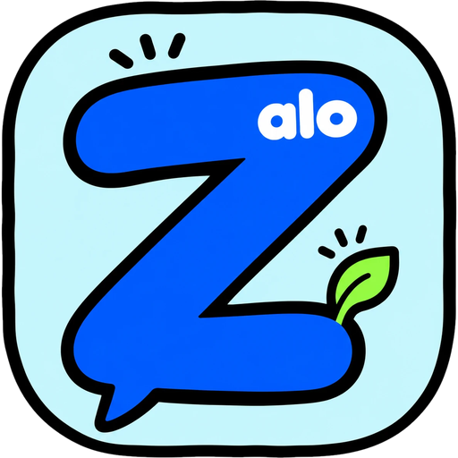
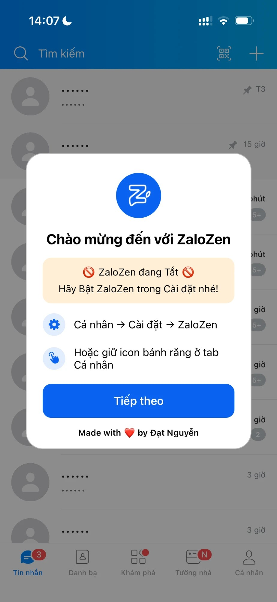
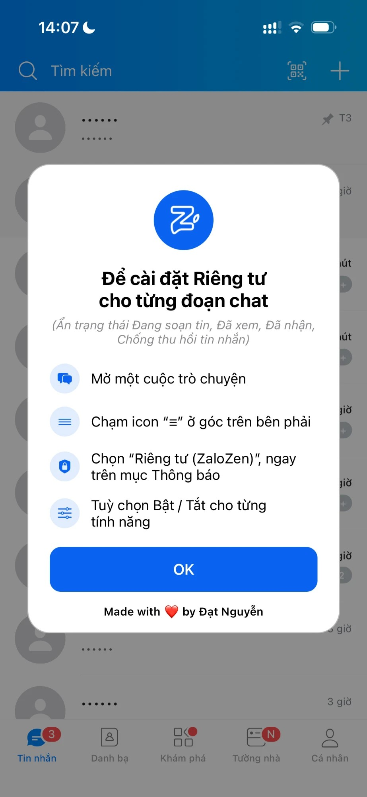
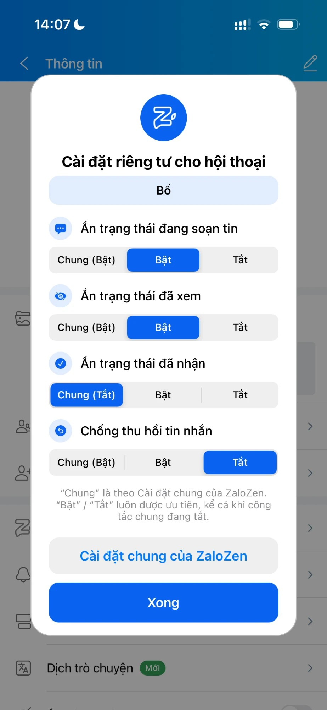
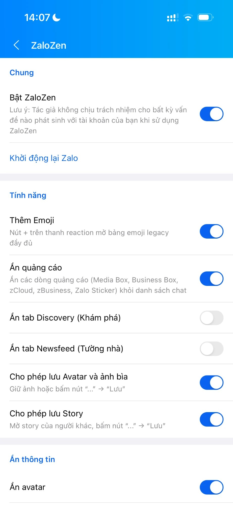
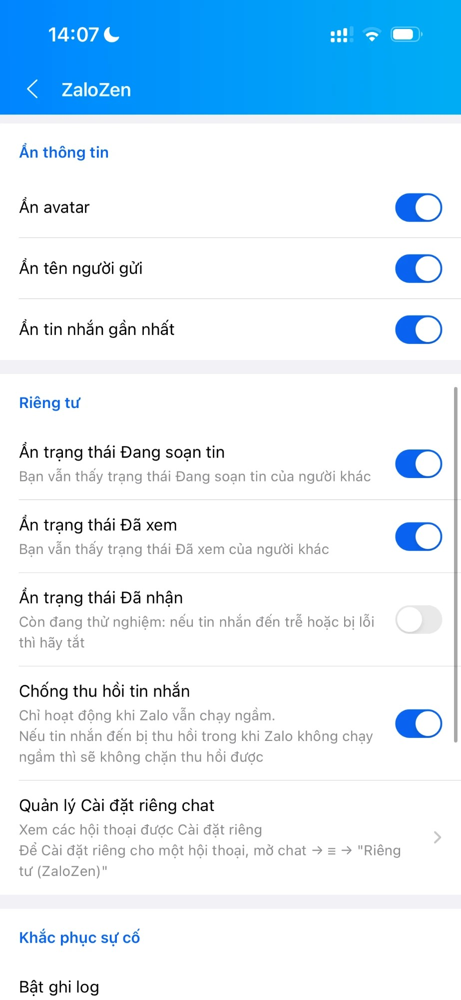

Developer
Qn

Qn





Tweak jailbreak cho Zalo iOS, giúp Zalo gọn gàng và thông minh hơn. Nhớ bật tweak sau khi cài.
Cài đặt nằm ngay trong Zalo: Cài đặt → ZaloZen; hoặc giữ nút bánh xe Cài đặt của Zalo.
⚠️ Lưu ý: Tác giả không chịu trách nhiệm cho bất kỳ vấn đề nào phát sinh với tài khoản của bạn khi sử dụng ZaloZen.
Tính năng:
+ trên thanh reaction mở bảng chọn emoji đầy đủ (có Yêu thích và Gần đây).